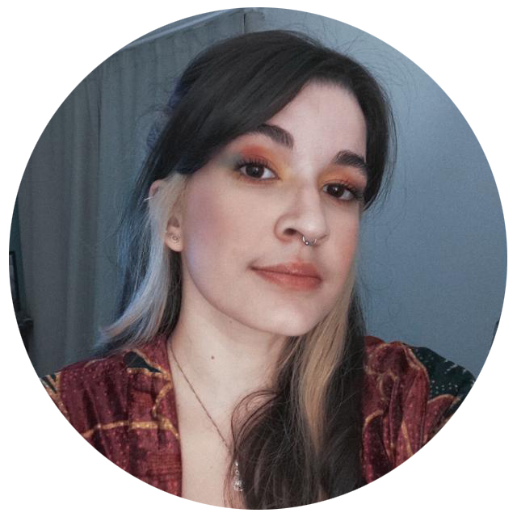

Maria Helena
Cipriano
26 anos, Junior Programmer.
Contato
+55 83 996516282
Avenida Ingá, 553
João Pessoa - PB
mariahelenatw@gmail.com
@mariahelener
|
 |
Educação
- UNIPÊ, 2021 - Presente
Graduação em Sistemas para Internet (cursando);
- Universidade Federal de Campina Grande, 2012 - 2017
Graduação incompleta em Engenharia Elétrica;
- University of Malta, 2018 - 2019
Intercâmbio em Engenharia Elétrica (Erasmus Mundus);
- Colégio Geo Tambaú
Diploma de ensino médio;
|
Ferramentas
- Python
- C, C++
- Matlab
- HTML
- Adobe Photoshop
- Pacote Office
- LabView
|
Habilidades Pessoais
- Fácil de trabalhar em grupo,
- Autodidata em idiomas e ferramentas,
- Atenciosa e Comunicativa,
- Pensamento racional e direcionado para atividades de soluções lógicas,
|
Experiência
- Kings Gate Arms Pub, 2017-2019
Bar Manager and Salesperson;
- Iniciação Científica CAPES, 2012 - 2016
Pesquisadora;
- Digital Image Processing, University of Malta- 2018
Projeto final de cadeira envolvendo robótica e processamento digital de sinais;
|
Idiomas
- Português,
- Inglês,
- Francês
|